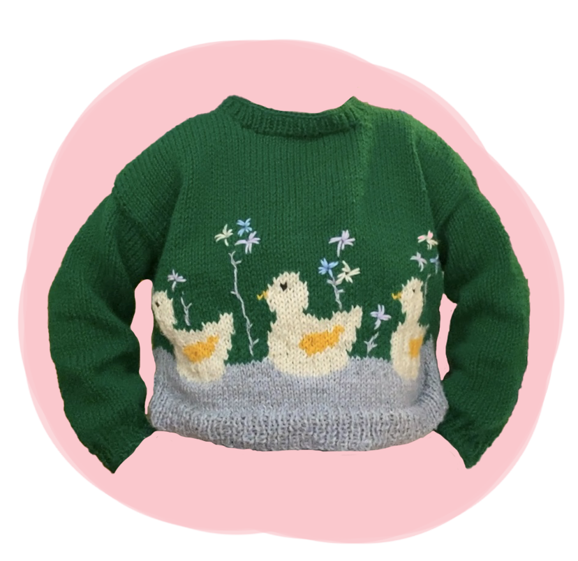

"Quack Quack" Duck Sweater
This green, duck covered sweater was one of the first projects I made where I used intarsia. This technique meant that had to carry the yarn over throughout the inside of the garment to create the design of the ducks. I would knit some stitches with green yarn, then switch over to cream, then back to green. Intarsia meant that I never had to cut my yarn, which I loved because it was less ends I had to weave in when I was finished with the project. I had some struggles with the yarn constantly getting tangled, but the end result looks seamless.
I also did some embroidery for this project. When I had finished sewing the pieces together, I took some extra yarn and sewed on some flowers surrounding the ducks. I feel like embroidery looks really unique and and playful. It was a bit difficult figuring out where I wanted the flowers to go and how big they should be, but after some trial and error, I'm really happy with the end result.
